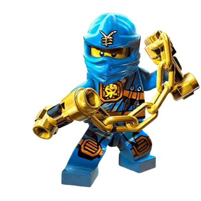
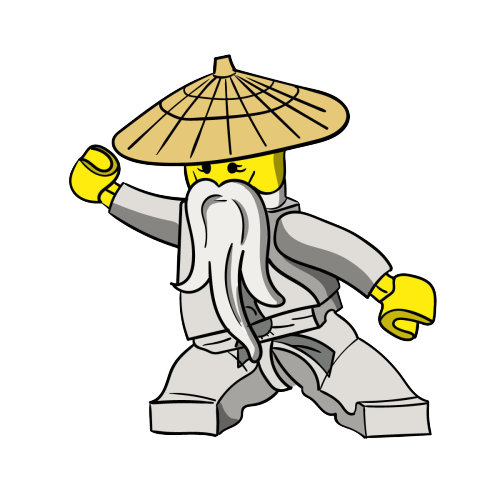
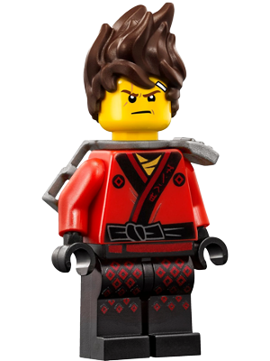

|  | Jai |
|---|---|
| Jay es el ninja del rayo, un inventor talentoso con un loco sentido del humor, amistoso, aunque a veces es capaz de resistir una gran tortura por sus amigos, está perdidamente enamorado de Nya. Le encanta la tecnología de punta que hoy lo rodea, aunque sus esfuerzos por desmontarla y averiguar cómo funciona han provocado ya un par de explosiones. Jay siempre suele en ocasiones verse intimidado en malas situaciones pero siempre esta repleto de ideas y siempre puede hacer reír a los demás en malos momentos. Es el ninja que liberó el spinjitzu por primera vez, él arregló a Zane después del ataque del gran devorador. Fue rival de Cole en la temporada 3-4, en la quinta temporada se ve un reflejo de su futuro que revela que Nya lo elegirá a él y en la sexta temporada descubre que es adoptado. | |
|  | Sensei |
| El maestro Wu fue uno de los grandes héroes de Ninjago durante muchos años, haciendo todo por ninjago y dando siempre sus muy sabios consejos; él participó con Garmadon y los maestros elementales en la primera Guerra Serpertine y se enfrentó a las manecillas del tiempo. Encontró a Morro de niño y luego se convertiría en su primer alumno, Él se obsesionó con ser el ninja verde, pero falló y murió, luego reclutó 4 jóvenes para vencer a los esqueletos del inframundo y lo lograron. Le gusta el té y practicar Spinjintzu. | |
|  | Kai |
| Kai es el ninja del fuego, es el primer protagonista de la historia de la serie y aunque hoy es todo un héroe, sus orígenes son humildes. Es valiente, intrépido y muy impulsivo, . Su padre era un buen amigo del Sensei Wu y ambos vivieron aventuras juntos durante años. Más tarde, Wu escondería el mapa que revelaba la ubicación de las cuatro armas doradas del Spinjitzu en la herrería de su amigo a donde los esqueletos roban el mapa para Lord Garmadon y así el podría encontrar las armas doradas y convertir ninjago como el siempre quiso. |
| El programa se desarrolla en el mundo ficticio de Ninjago, el cual está inspirado en la cultura China y Japonesa. Aparece en la serie como un terreno extenso, tal como la cadena de islas de Japón, con diferentes áreas hogar de diferentes animales y plantas, incluyendo dragones y serpientes místicas (Como el Gran Devorador). Tiene un inframundo, donde los villanos como Lord Garmadon y la Armada Esqueleto habitan; junto a lugares sagrados donde la mayoría de las cosas están ocultas u olvidadas (como las Armas Doradas y la tumba Serpentín). Similares a los de la pasada generación de productos Lego Bionicle, los personajes principales tienen relación con algunos elementos de la tierra (en este caso Fuego, Hielo, Rayo y Tierra). Además, el mundo tiene un aspecto moderno, como lo demuestran los rascacielos y los vehículos, entre otras cosas. |
Lego System A/S, más conocida como LEGO, es una empresa danesa de juguetes. Su producto más conocido son los bloques de construcción pero también cuenta con series propias (Bionicle, Ninjago); una línea de productos preescolares (Lego Duplo) y una línea de juguetes de robótica (Lego Mindstorms) entre otros activos. Además presta su marca a la cadena de parques temáticos Legoland. Fue fundada en 1932 por Ole Kirk Christiansen, un carpintero natural de Billund, y desde entonces ha estado controlada por su familia. Si bien se dedicó al principio a fabricar artículos de madera, desde 1949 está especializada en los juguetes de construcción fabricados con plástico. La empresa mantiene su sede social en Billund, cuenta 7800 empleados y está presente en más de 130 países.
Tienda oficial de LEGO